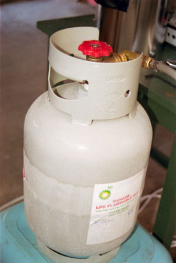

| cooler |
| home page |
| With over 40 years of thermal engineering experience, Lytron has a heat exchanger for every application. . Lytron - Standard Products - Heat Exchangers - Overview ") document. With six product lines and over 130 standard units, Lytron's broad range of heat exchangers can meet just about any heat transfer requirement. Our 6000 Series copper heat exchangers find the broadest application and are compatible with most cooling fluids, including water. |
 |
|  | This publication provides some common sense suggestions and low-cost retrofit options to help you "keep your cool"- and save electricity. Passive cooling uses non-mechanical methods to maintain a comfortable indoor temperature. The most effective method to cool your home is to keep the heat from building up in the first place. , gain) is sunlight absorbed by your house through the roof, walls, and windows. Secondary sources are heat-generating appliances in the home and air leakage. |